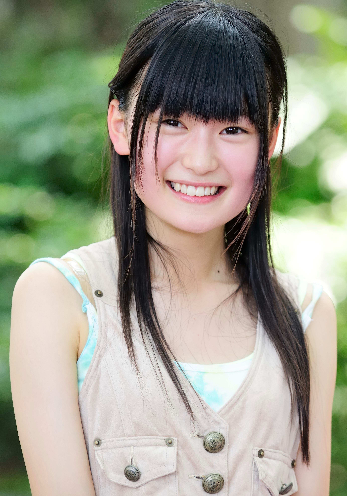

2008年與高城蕾妮、伊倉愛美、高井つき奈、川又智菜美（弓川留奈）成為桃色幸運草誕生前選拔成員之一：0期成員
2008年5月17日桃色幸運草誕生，桃色幸運草最初期成員，於【神奈川．川崎アゼリア】活動【スターダスト芸能3部新人発掘オーディション】登場
2008年12月29日於【東京．原宿アストロホール】演唱活動【3-B Jr. LIVE『年末だヨ！全員集合』】確認與伊倉愛美、藤白すみれ從桃色幸運草離隊
【テレビ東京「MAGISTER NEGI MAGI 魔法先生ネギま！」「ケータイ捜査官7」】【日本テレビ「斉藤さん」】【NHK「トップセールス」】【TBS「大好き！五つ子 2008」】
【ラストプレゼント】
【ジュエルペット】
【ピュアピュア】【UTB】【Kindai】【B.L.T.】【BUBKA】